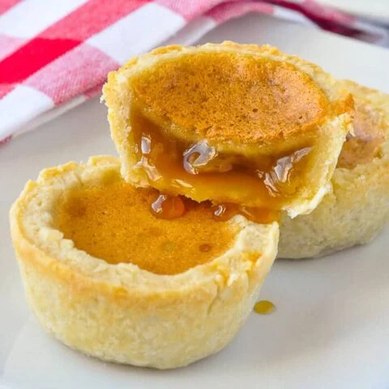

Butter Tarts

What is it?
A butter tart is an iconic and traditional Canadian dessert! It is a flaky pastry shell filled with a rich, sweet filling that ranges from soft and gooey to runny. There are so many variations of the butter tart that there are whole festivals dedicated to this sweet treat.
Mrs. Malcolm MacLeod's recipe was the first to be printed in the Royal Victoria Hospital Cook Book in the 1900's, but the butter tart has been around since the pioneers of the 1800's.
This recipe will take 1 hour and yield 12 Large Tarts
Preheat oven to 425 degrees F
For the Pastry, you will need the following 6 ingredients:
- 2 1/4 cups Pastry Flour or All-Purpose Flour
- 1 tablespoon Brown Sugar
- 1/2 teaspoon Salt
- 1/2 cup Shortening, very cold and cut into cubes
- 1/2 cup Butter, very cold and cut into cubes
- 6 tablespoons Ice Water, enough to bring the dough together
For the Filling, you will need the following 7 ingredients:
- 1/2 cup Raisins, omit or subsitute with peacans, walnuts, or chocolate chips
- 1/4 cup Butter, melted
- 1/2 cup Brown Sugar, packed
- 1/4 teaspoon Salt
- 1/2 cup Corn Syrup
- 1 Egg, lightly beaten
- 1 teaspoon Vanilla extract
Steps to prepare Pastry:
- Cut Shortening and Butter into flour until pea-sized pieces are produced. Alternatively use a food processor.
- Sprinkle water over the flour mixture and toss with a fork until just incorporated. DO NOT OVER MIX.
- Form the dough into 2 rounds, 1 inch thick.
- Wrap in plastic wrap, place in fridge to rest for 1 hour.
- Roll out dough on floured surface.
- Cut into 4 inch rounds, and line the rounds into the muffin tins. Chill in the fridge, or freezer, while preparing the filling for flakier pastry.
Steps to prepare Filling:
- Combine all ingredients except raisins.
- Mix well.
- Sprinkle raisins in a single layer in the bottom of the pastry lined muffin tins.
- Fill 2/3 full with the syrup mixture.
- Bake on bottom oven rack for 12-15 minutes.
- Cool completely on a wire rack before removing tarts from pan.
- Share with friends and family because they are much too sweet to eat them all yourself!
Back to Recipes